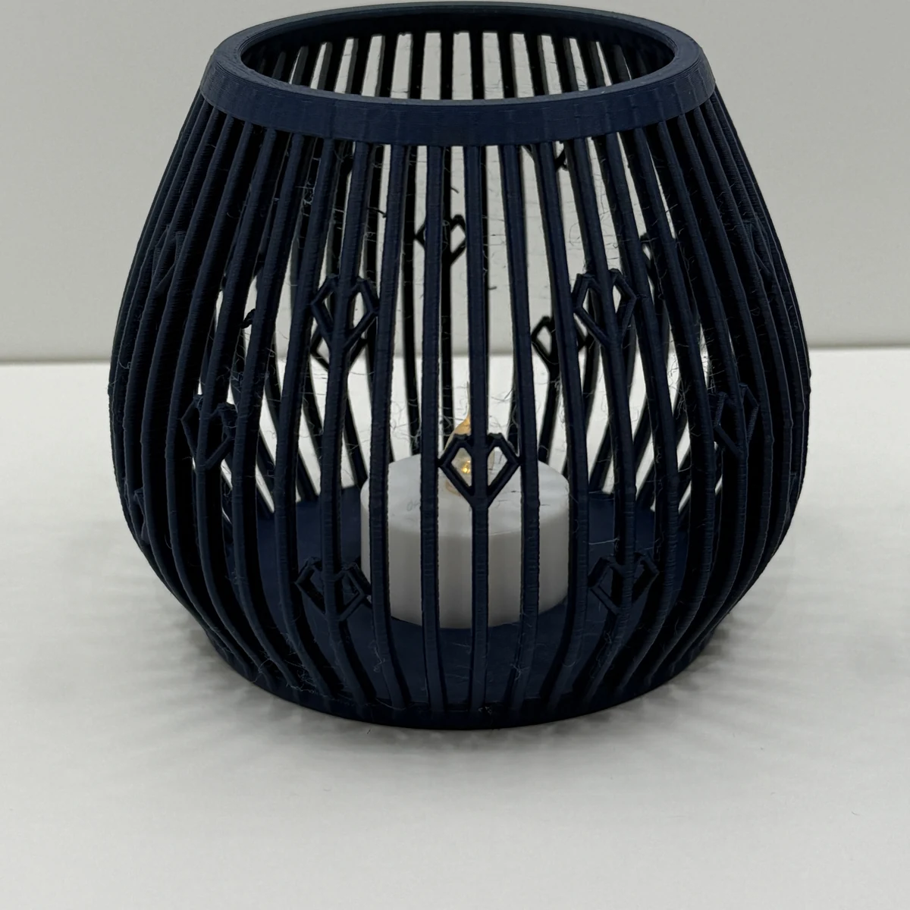

Motiv-Dekor
Motive, die mitgedruckt werden.
Tannenbaum, Stern, Eiskristall, Herz oder ein Mix daraus sitzen als Relief direkt auf den Stäben.
Anzahl, Grösse, Höhe, Relief-Tiefe und die Zahl der Motivreihen stellst du selbst ein. Im Nachtmodus der Vorschau siehst du, wie die Motive im Kerzenlicht wirken.